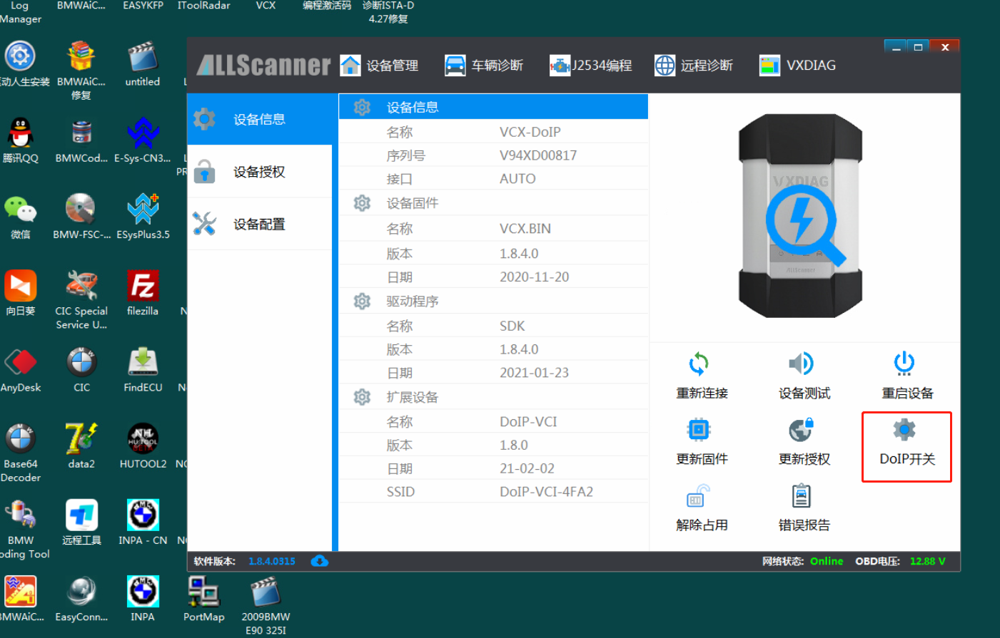
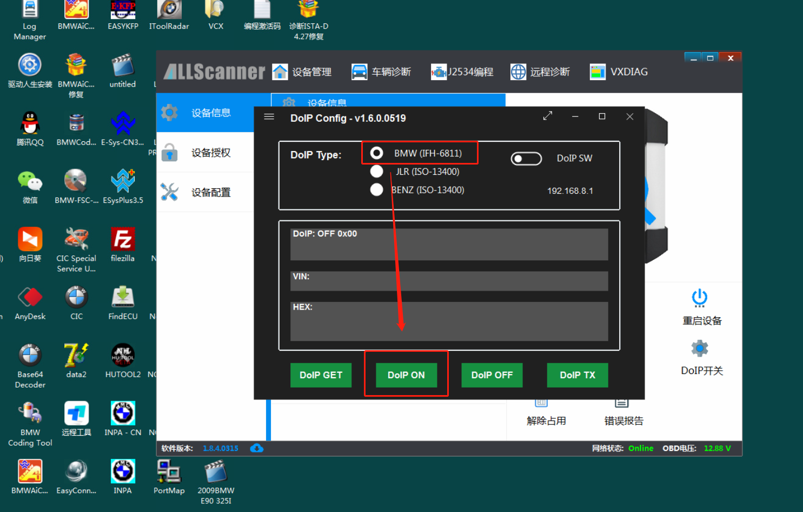
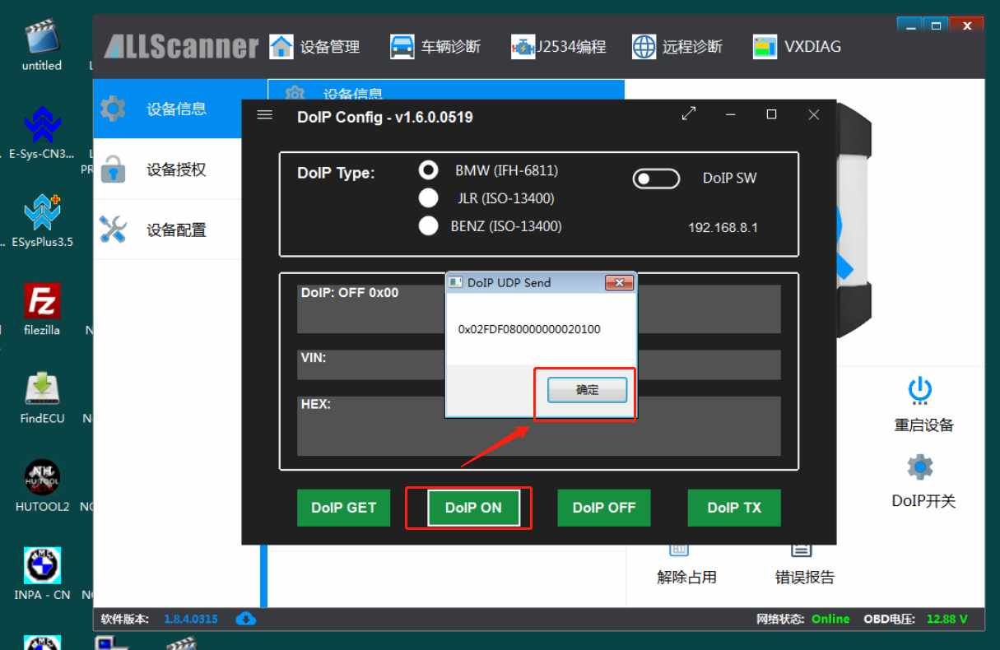
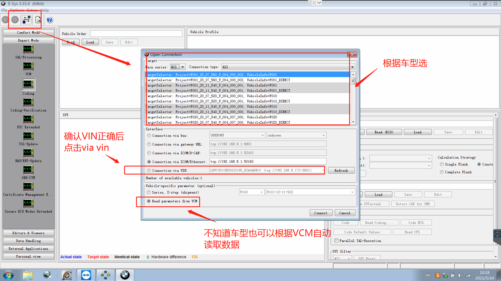
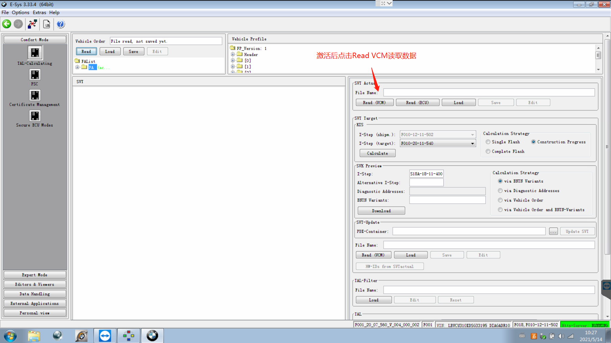

BMWE-sysEngineering Software Introduction andVCX BMWDeviceConnectionOperation Introduction
BMW E-sysisBMWreleaseforBMW FSeriesVehicleabovecodingandProgrammingshoulduseProgramSoftware。ThisSoftwareallowsuseuser disableuseandactivateFSeriesVehiclesomeFeatures。
tobelowisitscenteronethesecanUsageBMW E-sysSoftwareactivate/disableuseFeatures：
1.lock/unlock soundConfirm
2.driving navigationMenu，includingindrivingwhenwatchingDVD。
3.displayEngineoutputandtorque meter。
4.CancelConfirmscreenlargescreenstartdelay。
5.OpenvoicerecognizeFeatures。
6.settingsthree typesBluetoothelectricmeansringsound。
7.convertcicMemoryaddressAddedto50。
8.latestafterCloseStatusair conditioningMemory。
9.indoorwithincirculation memorylatestafteronetimeleadengineClosewhenStatus。
10. Acolumn electricafterflap buttonandremote key，forClosePowerafterflap。
11.Addedreplacegear paddle。
12.convertsmall screenModificationforlargescreendisplay。
13. Pdcverticalandhorizontaldisplay。
14.Disable seatbelt status display-Passenger seat。
15.Disable seatbelt status display-drivingpersonseatseat。
16.Disable seatbelt reminderFeatures-Passenger seat。
17.Disable seatbelt reminderFeatures-drivingbitposition。
18.disabled seatbelt releasesecurityFullwithvoiceprompt-passengerseatbit。
19.disabled seatbelt releasesecurityFullwithvoiceprompt-drivingbitposition。
20.intersectionVehiclehigh beamAutomaticcontrol。
21.angel eyesOpenandCancelFeatures。
22.CloseEnginestartstopFeatures-defaultcasebelowatonOpenStatus。
23. Gpswhenperiodsamesync。
24.pinOpenaftercover
This article usesBMW-F18CASandZGWmoduleTestPlatformto operate engineer modeConnectionMethod。
useVCX BMWDeviceConnectionBMW E-sysStep：
1.BMWDeviceconnectabovecomputerandmodule，OpenVCI ManagerDevice ManagementClient，firstcheckDeviceFirmwareLicenseisif latestNew，thenClick "DOIPswitch"Option：

2.SelectBMW，OpenDOIP ON，can read outBMWDOIPData，As shownshown：



3.Do notCloseDOIP ConfigMenu，directlyOpenE-sysEngineering Software，ClickLinkicon，based onModelsSelectafter，ClickConnectConnection:


4.confirmModelsEntermainMenufollow diagramshownoperation：


5.readVCMData:


codingalsoisthissamereadData

Note：super/ultraclassremoteDONETConnectionDeviceUsageE-SYSconnectModeasbelowfigure：